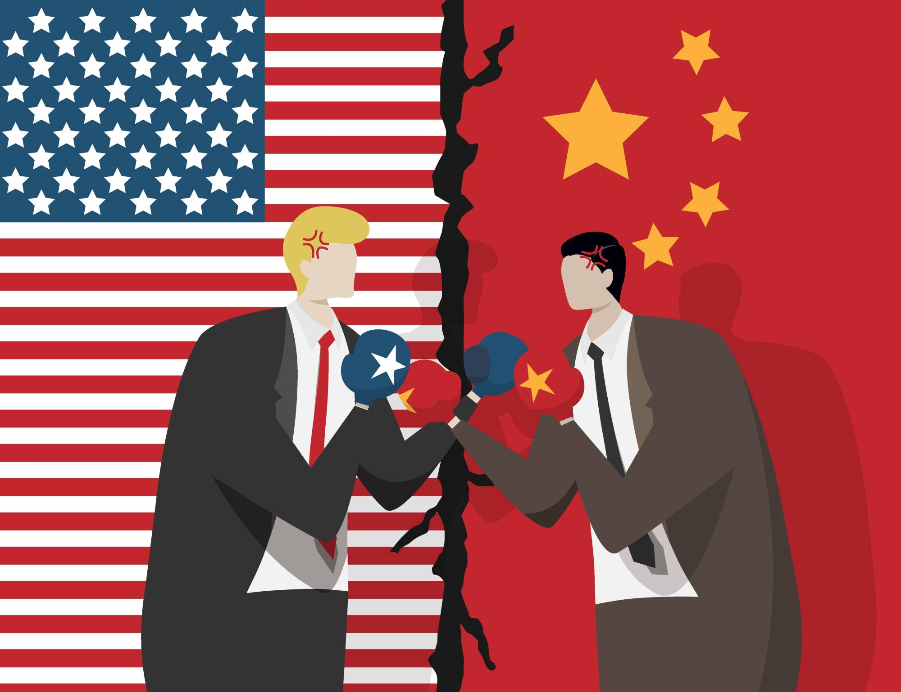
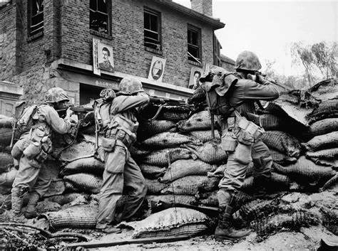
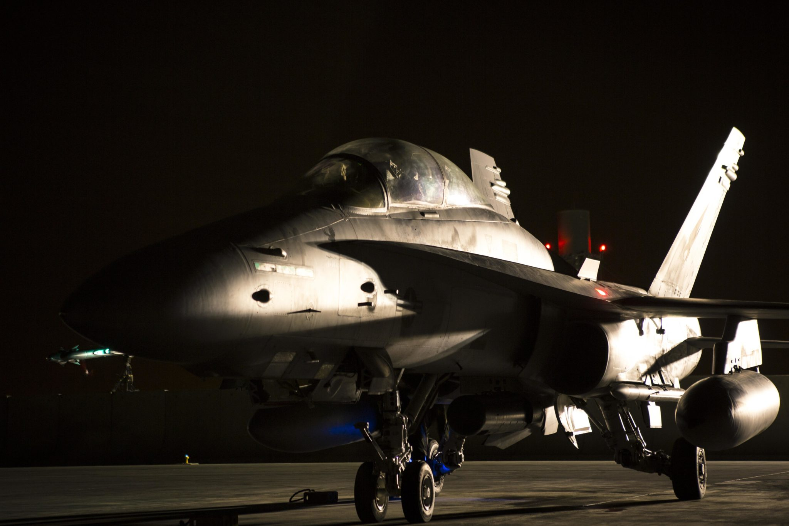

One of the most commonly recognized examples of a
large scale war that didn't involve any declarations of
war is the Cold War. The conflict between the Soviet Union
and United States was carried out mostly on an ideological basis
and through proxy wars.

These proxy wars include the Korean War, which the
United States became involved in through the United
Nations, and the Vietnam War, which escalated rapidly
with LBJ's Gulf of Tonkin Resolution. Despite involving
a significant amount of both economic and human resources,
the US lost both of these wars.

The AUMF (Authorization for Use of Military Force) of 2001 allows
a US president to engage in military operations without the
permission of Congress. However, Congress has to be notified
within 48 hours and the operation cannot last more than 90 days.
This was signed into law by Bush in response to the September 11 attacks, but has militarily empowered
presidents for several decades.

Conflicts that the US has taken part in under the guise
of the 2001 AUMF includes the War in Afghanistan, Iraq War,
Intervention in the Somali Civil War, Intervention in Libya,
and an Intervention in Syria. All of these conflicts fall under
the umbrella of the War on Terror and spanned multiple presidencies (Bush, Obama, Trump).
It is estimated that the War on Terror has costed the US over
eight trillion dollars and nearly a million American lives, a war
that was never formally declared by Congress.